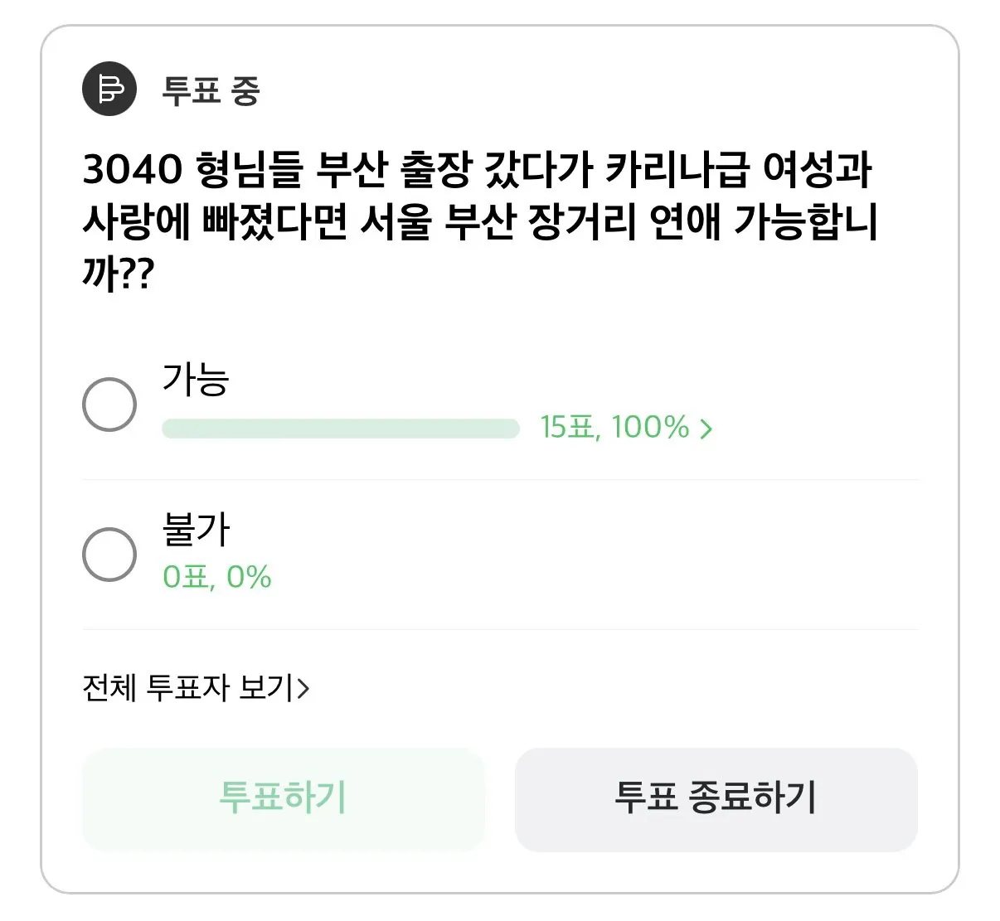

비행기 타야함 KTX는 거의 항상 만석이라.
일산~마산도 해봤는데 부산~서울 ㅈ밥이지 뭐...
미국이여도 가능하다능
내전 중 국가여도 감
이거 보고 KTX 정기권 결제했다
이사가야지
일면식도 없는 애랑 한번하려고 버스타고 지방가는 새끼도 많은데 이정도면 뭐 ;;
세호야!
또속냐 세호야!
유럽이여도 감.
지랄 ㅋ x리나도 누군가는 감.
카리나 아니어도 서울부산 장거리연애 하는데ㅋㅋ
미국도 가능
와이프 외국인이라 해외도 나갔는데 부산쯤이야
그냥 이사 해야지
저렇게 생긴 애들은 이스라엘 살아도 연애한다
페이팔로 자꾸 돈 달라고 하더라
카리나 정도면 비혼주의자도 프러포즈할듯
카리나 20대 정도면 다른남자들이 채갈까봐 결혼하자고 할거고
카리나 30대면 카리나 비혼선언 하기전에 결혼하자고 할꺼고
카리나 40대 수녀님이어도 결혼하자고 할듯
물론 카리나가 거절하겠지
그래도 열번찍어 안넘어가는 사람 없기때문에 120번까지 가능할듯 물론 신고 안당하는 선에서.
지역균등발전에 박차를 가하겠구만
아프리카여도 가능하다
이건 카리나가 외계인이어도 가능
로맨스스캠은 해외장거리 연애인데 서울부산정도면 ㅋㅋㅋ
돈을 빌려서라도 옆에 앉힌다 무슨 장거리연애여 당장 가서 부모님께 인사드리고 데려와서 동거로 가야지 어떤 딴놈이 채갈줄알고. 물론 이런 고민 백날해봐야 무슨 의미가 있겠냐만은
카리나 아니여도 하는사람 많을걸
외모보고 장거리 연애하나 마음이 중요함
진짜 영포티 사이트 다됏네
몸이 멀어지면 마음도 멀어지는건데 둘 중 하나가 이사하지않는이상 마음이 식거나 바람날듯?ㅋㅋ
나라면 그냥 내가 부산으로 이사간다
나는 가능한데 여자가 가능할까?
이사하면 그만 ㅋ
Ktx 한방에 갈수있으면 존⃫나⃫ 쉬운 장거린데 ㅋㅋㅋㅋ 글쓴놈 진짜 장거리 안해봤지?
정말 순애로 결혼까지 한다??
집팔아서 KTX에서 먹고 자고 하면서라도 다닐걸?
부산은 직통 KTX있는데 개꿀이지